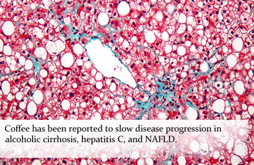
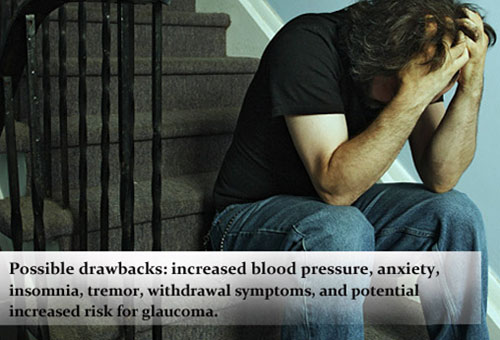

У людей, употребляющих кофе, значительно ниже риск возникновения депрессии. Кофе способно замедлять развитие алкогольного цирроза, гепатита С и неалкогольной жировой дистрофии печени, обладает рядом преимуществ в лечении синдрома сухого глаза, подагры и профилактике MRSA-инфекции. Возможные негативные последствия употребелния кофе: повышение артериального давления, тревога, бессонница, тремор, синдром отмены и возможное повышение риска развития глаукомы.
Депрессия
* У людей, употребляющих кофе, значительно ниже риск возникновения депрессии
Проведённое в 2011 г. исследование показывает, что увеличение употребления кофе может быть полезным и для нашего психического здоровья: у женщин, которые пили от 2 до 3 чашек кофе в день, риск развития депрессии был на 15% по сравнению с теми, кто выпивал менее 1 чашки в неделю. Снижение риска на 20% наблюдалось среди тех, кто выпил 4 и более чашек кофе в день. Кратковременное влияние кофе на настроение может быть связано с изменением активности серотонина и допамина, несмотря на то, что механизмы, лежащие в основе его возможного долгосрочного влияния на настроение, вероятно, связаны с его антиоксидантными и противовоспалительными свойствами, которые играют определённую роль в развитии депрессивных расстройств.
Заболевания печени

* Кофе обладает способностью замедлять развитие алкогольного цирроза, гепатита С и неалкогольной жировой дистрофии печени
Печень участвует в расщеплении кофе, однако кофе помогает защитить печень (в некоторых случаях). Данные исследований показывают, что кофе замедляет прогрессирование заболевания у пациентов с алкогольным циррозом, гепатитом С и снижает риск развития гепатоцеллюлярной карциномы. Проведённое в 2012 г. исследование показало, что употребление кофе связано с уменьшением риска развития неалкогольной жировой дистрофии печени (НЖДП), а в то же время другие недавние работы доказали, что кофе защищает от формирования фиброза печени у пациентов с уже установленной НЖДП. Но это ещё не всё…
* Кофе обладает рядом преимуществ в лечении синдрома сухого глаза, подагры и профилактике MRSA-инфекции
Ряд других исследований показывают, что употребление кофе может облегчить синдром сухого глаза путём усиления продукции слёзной жидкости, уменьшить риск развития подагры, а также оказать потенциальную помощь в борьбе с инфекциями. Было показано, что употребление кофе и горячего чая позволяет защитить от одной наиболее тревожной проблемы медицины — метициллинорезистентного золотистого стафилококка (MRSA). Пока остаётся неясным, обладают ли напитки системной антимикробной активностью.
И, наконец, возможные риски

* Возможные негативные последствия: повышение артериального давления, тревога, бессонница, тремор, синдром отмены и возможное повышение риска развития глаукомы
Как это часто бывает, любая польза сопровождается риском, и, соответственно, употребление кофе, конечно, имеет негативные медицинские и психические последствия, которые необходимо учитывать. Кроме вышеупомянутого возможного повышения артериального давления, кофе может вызывать или усугублять беспокойство, бессонницу, тремор и потенциально увеличивают риск развития глаукомы. Также, учитывая возможную тяжесть симптомов, следует рассматривать возможность развития синдрома отмены кофеина.